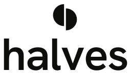

01 logo mark + wordmark
Two halves, rotated, not mirrored.
The mark is one semicircle and its 180° rotation, offset by a gap. Neither is lead, neither follows. Rotation (not reflection) matters: it reads as two different people of equal standing. The wordmark is lowercase Hanken Grotesk 600, tracked −2%, converted to outlines.
mark · light
mark · dark

mark · pair (event/merch only)
mark · 1-color black
wordmark · light
wordmark · dark

stacked · light

stacked · 1-color white
construction
r = 36 · gap = 6 · offset = ±7 vertical · pivot at centre (50,50). Rotating 180° gives the same shape.
rules
- Clear space = one half's radius on every side.
- Minimum: mark 16 px / wordmark 48 px wide.
- Cobalt pair version: events, merch, stickers. Never in the app chrome.
- Never: tilt, outline, add a heart, split the halves into two colours except cobalt pair, set on photos without a solid panel.